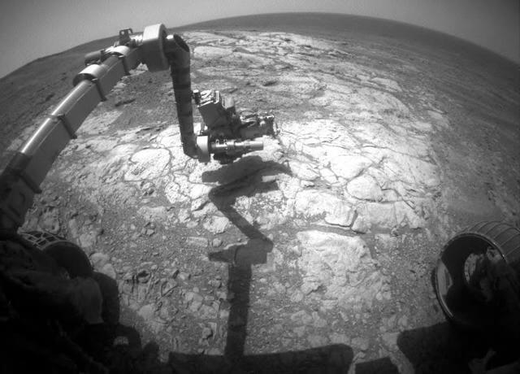

Frequently Asked Questions
- What are the Mars rovers?
- NASA's Mars rovers are robotic vehicles designed to explore the surface of Mars.
- What is the purpose of these missions?
- To study Mars’ climate, geology, and potential for life, and to prepare for future human exploration.
- Which rovers are covered in this project?
- This project highlights Opportunity and Curiosity, two of the most successful NASA rovers.
- How long did Opportunity operate?
- Opportunity was only expected to last 90 days, but it operated for nearly 15 years — from 2004 to 2018.
- What was Opportunity’s mission?
- Its mission was to search for signs of past water activity on Mars. It discovered evidence of ancient lakes and groundwater.
- What is Opportunity 3?
- This refers to the rover’s final journey through Perseverance Valley, its last exploration site before losing contact in 2018.
- When did Curiosity land on Mars?
- Curiosity landed on August 6, 2012, in Gale Crater, and it is still active today.
- What is Curiosity’s mission?
- Curiosity is studying Mars’ climate and geology, and assessing whether the planet could have ever supported microbial life.
- What is Curiosity 3?
- Curiosity 3 refers to its advanced mission stage climbing Mount Sharp to study different sediment layers.
- How are the rovers powered?
- Opportunity used solar panels, while Curiosity uses a nuclear battery called a radioisotope thermoelectric generator (RTG).
Opportunity Rover – Perseverance Valley
Curiosity Rover – Mount Sharp Climb